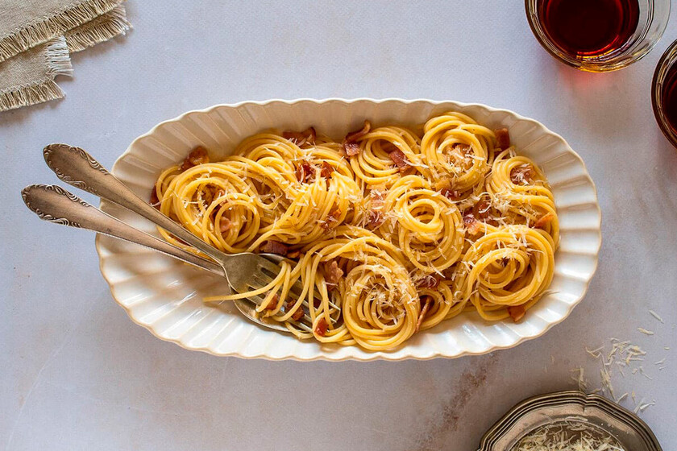

>
Home
Carbonara

Description
Carbonara is a creamy, comforting Italian pasta dish that relies on the magic of eggs and cheese instead of heavy cream. It is savory, salty, and incredibly fast to prepare, making it a perfect quick dinner..
Ingredients
- Spaghetti pasta
- Guanciale or pancetta
- Eggs
- Pecorino
- Freshly ground black pepper
- Salt
Instructions
- Boil pasta:cook spaghetti in salted water until al dente.
- Fry meat:sauté guanciale in a pan until crispy and golden.
- Mix eggs:whisk eggs and grated cheese in a small bowl with plenty of black pepper
- Combine:toss the hot pasta into the pan with the meat, remove from heat, and quickly stir in the egg mixture.
- Emulsfy: Add a splash of pasta water to create a smooth, creamy sauce without scrambling the eggs.